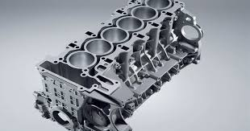
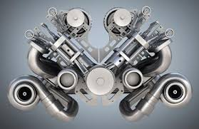
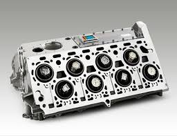
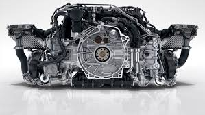

O motor em linha é caracterizado pela disposição linear dos cilindros, alinhados em uma única fileira. Essa configuração é conhecida por sua simplicidade e eficiência, proporcionando uma distribuição uniforme de potência ao longo do eixo do motor. Motores em linha são comumente encontrados em veículos de passeio e são apreciados por sua suavidade de funcionamento e facilidade de manutenção.
No motor em V, os cilindros são dispostos em um ângulo em forma de V em relação ao virabrequim. Essa configuração permite um arranjo mais compacto do motor, ideal para veículos com espaço limitado sob o capô. Os motores em V são conhecidos por sua potência e desempenho, sendo frequentemente utilizados em veículos de alto desempenho e de luxo.
O motor em W é uma variação do motor em V, onde são adicionados cilindros extras para formar uma configuração em W. Essa disposição permite uma distribuição mais uniforme do peso e uma redução no centro de gravidade do veículo. Motores em W são geralmente encontrados em veículos de alto desempenho e de luxo, oferecendo uma combinação de potência, suavidade e eficiência.
O motor Boxer, também conhecido como motor horizontalmente oposto, possui cilindros opostos que se movem em direções opostas em relação ao virabrequim. Isso resulta em um perfil de motor mais baixo e uma distribuição de peso mais equilibrada, proporcionando uma melhor estabilidade e controle do veículo. Os motores Boxer são frequentemente utilizados em veículos com tração nas quatro rodas e são apreciados por sua confiabilidade e desempenho.
